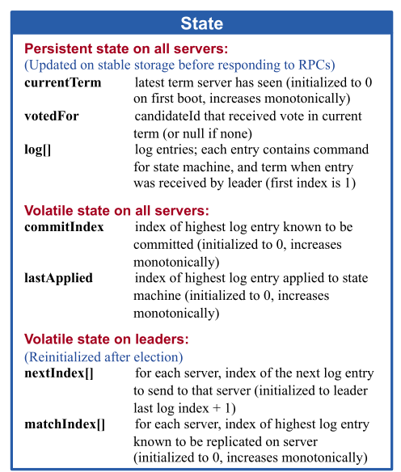
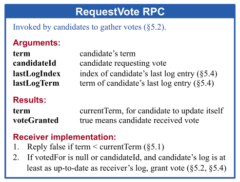
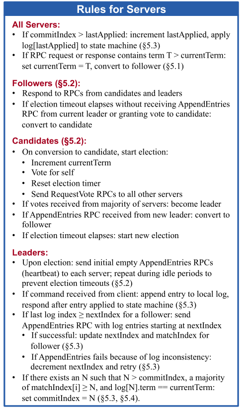
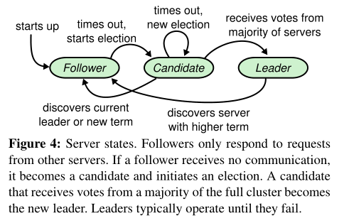
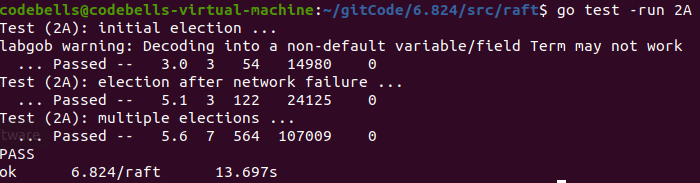
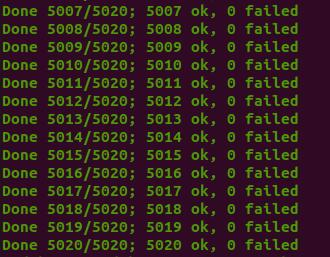

mit6.824 raft实现 2A部分
Raft属于是分布式领域非常常见的一个共识算法了，上一篇也对其进行比较详细的介绍，其实就是对论文的思路进行理解，这次借着课程作业来对其实现一下，Raft的思路很简单，实现之前，我以为会很容易，但是上手写的时候，发现特别多的问题，尤其是并发，下面几篇记录一下我踩得坑，以及详细的思路解释。对于2A，因为跑的速度比较快，跑了5000次没有出错，应该还算是稳健。
思路
推荐几个有助于实现Raft的网站
先推荐一个Raft动态展示的网站，可以点击看每次发送的RPC数据是什么，相当清晰，对于实现Raft很有用
一个帮助Go入门的学习网站，主要看Channel和Time还有Goroutine
Mit的StudentGuide可以看看，顺便Lab2主页
这个Raft动态展示也不错
写之前强烈建议看一遍论文，论文已经提到很多细节的设计。之前的博客是基于论文写的。
StudentGuide提到Channel传递消息和Locking两个代码组织方式，他更推荐 shared structure + lock，因为”Experience suggests that for Raft it is most straightforward to use shared data and locks“，但是我还是使用了Channel消息驱动的方式实现。
结构体
结构体，论文中已经设计好了，直接拿来用即可，中间加点自己实现时需要的成员变量

type Raft struct {
mu sync.Mutex // Lock to protect shared access to this peer's state
peers []*labrpc.ClientEnd // RPC end points of all peers
persister *Persister // Object to hold this peer's persisted state
me int // this peer's index into peers[]
dead int32 // set by Kill()
// Your data here (2A, 2B, 2C).
// Look at the paper's Figure 2 for a description of what
// state a Raft server must maintain.
currentTerm int
votedFor int
voteCount int
state NodeState
//对于2A下面的没有什么作用，是2B和2C使用的变量
logs []LogEntry
commitIndex int
lastApplied int
nextIndex []int
matchIndex []int
//下列自定义，看个人实现方法
applyCh chan ApplyMsg
winElectCh chan bool
grantVoteCh chan bool
heartbeatCh chan bool
//这是2D使用的变量
lastIncludedIndex int
lastIncludedTerm int
}
type AppendEntriesArgs struct{
Term int
LeaderId int
//2B 2C使用
PrevLogIndex int
PrevLogTerm int
Entries []LogEntry
LeaderCommit int
}
type AppendEntriesReply struct{
Term int
Success bool
//2B 2C使用
RollBackIndex int
RollBackTerm int
}RPC所传输数据记得大写字母开头，否则报错

type RequestVoteArgs struct {
// Your data here (2A, 2B).
Term int
CandidateId int
//下列2B使用
LastLogIndex int
LastLogTerm int
}
// field names must start with capital letters!
type RequestVoteReply struct {
// Your data here (2A).
Term int
VoteGranted bool
}
领导者选举
首先对于各个节点的状态转换要了解，下面捋一遍节点选举流程。

当集群刚启动时，整个集群不存在Leader，在节点的各自等待时间超时后，那么这个节点成为Candidate开始选举，触发了选举条件后，该节点的Term需要加1，以此表明该轮投票是较新的，成为Candidate后会立刻广播请求其他节点投票的RPC，其他节点会根据Term的大小和日志的大小进行判断，如果接收节点的Term比Candidate大，那么拒绝投票，如果接受节点Term和Candidate一致，但是日志比Candidate的新，那么也拒绝投票，满足上述条件后，如果该节点没有对其他Candidate投票，那么对其进行投票。
当Candidate节点收到的投票数超过一半时，立刻成为Leader，成为Leader后立刻对其他所有节点发送心跳包，表明Leader身份，选举成功。当有节点等待超时后，就会再次触发选举操作。
要注意一些细节就是超时时间的重置问题，我因为使用了简单的阻塞Channel，导致后续代码的死锁，应该使用非阻塞Channel通信，超时时间在两个地方重置
- 收到Leader的心跳包时
- 成功投票时
下面看看代码实现
源代码实现
入口函数Make
在lab6.824中，所有Raft节点初始化都需要通过入口函数，初始化后会建立主体的心跳ticker
func Make(peers []*labrpc.ClientEnd, me int,
persister *Persister, applyCh chan ApplyMsg) *Raft {
rf := &Raft{}
rf.peers = peers
rf.persister = persister
rf.me = me
// log.Printf("")
// Your initialization code here (2A, 2B, 2C).
rf.state = Follower
rf.currentTerm = 0
rf.votedFor = -1
rf.voteCount = 0
rf.commitIndex = 0
rf.lastApplied = 0
rf.applyCh = applyCh
rf.lastIncludedIndex=0
rf.lastIncludedTerm=0
rf.resetChannels()
rf.logs = append(rf.logs, LogEntry{Term: 0}) // 日志第一个为空
// initialize from state persisted before a crash
rf.readPersist(persister.ReadRaftState()) //2C实现
// start ticker goroutine to start elections
go rf.ticker()
return rf
}主体循环函数ticker
建立心跳后，会接收节点运行中Goroutine发送的Channel消息，通过接收消息来达到触发某段代码的目的。
// The ticker go routine starts a new election if this peer hasn't received
// heartsbeats recently.
func (rf *Raft) ticker() {
for rf.killed() == false {
rf.mu.Lock()
state := rf.state
rf.mu.Unlock()
switch state {
case Leader:
select {
case <-rf.heartbeatCh://一般不会出现这种情况，因为心跳一般由Leader发送，Followers接收
//这有可能是存在旧Leader的情况，收到新Leader的心跳包，正在变成Followers但是还没来得及变的情况
case <-time.After(100 * time.Millisecond)://每过一段时间，Leader给其他节点发送心跳包
rf.mu.Lock()
rf.broadcastAppendEntries()
rf.mu.Unlock()
}
case Follower:
select {
case <-rf.grantVoteCh://之前在领导者选举中提及的Follower两种重置超时时间的情况
case <-rf.heartbeatCh:
case <-time.After(rf.getTimeout() * time.Millisecond):
rf.becomeCandidate()
}
case Candidate:
select {
case <-rf.heartbeatCh://当成为Candidate时，需要重置超时时间
case <-rf.winElectCh://赢得选举时，成为Leader
rf.becomeLeader()
case <-time.After(rf.getTimeout() * time.Millisecond):
rf.becomeCandidate()
}
}
// Your code here to check if a leader election should
// be started and to randomize sleeping time using
// time.Sleep().
}
}RequestVoteRpc实现
这是领导者选举最主要的代码，Candidate发送RPC，Follower接收RPC，最终Candidate归拢投票，判断自己是否选举成功
func (rf *Raft) isLogTheLatest(LastIndex int, LastTerm int) bool {
//判断rf日志是否比参数更新，如果更新返回False
if LastTerm == rf.getLastTerm() {
return LastIndex >= rf.getLastIndex()
}
return LastTerm > rf.getLastTerm()
}
func (rf *Raft) VoteCheck(args *RequestVoteArgs) bool{
if rf.votedFor < 0 || rf.votedFor == args.CandidateId{
//投票检查，判断是否投过票了，或给这个Candidate投过票了，防止存在RequestVote重复请求的问题
if rf.isLogTheLatest(args.LastLogIndex, args.LastLogTerm){
//如果没投过票，或者给这个Candidate投了票，进行判断，如果Candidate的日志更新，那就可以投票
return true
}
}
return false
}
func (rf *Raft) RequestVote(args *RequestVoteArgs, reply *RequestVoteReply) {
// Your code here (2A, 2B).
rf.mu.Lock()
defer rf.mu.Unlock()
defer rf.persist()
if args.Term < rf.currentTerm {//当前节点的Term比Candidate更大，不进行投票，更新reply的Term
reply.Term = rf.currentTerm
reply.VoteGranted = false
return
}else if args.Term > rf.currentTerm {//当前节点是旧Term节点，已经过时
rf.becomeFollower()//不管当前什么状态，更新当前节点状态成为Follower
rf.currentTerm=args.Term
reply.Term = rf.currentTerm
reply.VoteGranted = false
if rf.VoteCheck(args){//投票检查，若可以投票，更新心跳及其他信息
reply.VoteGranted = true
rf.votedFor = args.CandidateId
rf.noBlockChan(rf.grantVoteCh, true)
}
}else{//当前节点Term和Candidate相同，一般情况下不会投票了，因为成为Candidate时Term会加1，
//当前的节点Term和Candidate相同，有几种情况，
//1.同为Candidate 2.已经给Candidate投过票了 3.选举成功的Leader
//这个判断用于处理同一个Candidate重复发起投票请求
reply.Term = rf.currentTerm
reply.VoteGranted = false
if rf.VoteCheck(args){
reply.VoteGranted = true
rf.votedFor = args.CandidateId
rf.noBlockChan(rf.grantVoteCh, true)
}
}
}
func (rf *Raft) sendRequestVote(server int, args *RequestVoteArgs, reply *RequestVoteReply) {
ok := rf.peers[server].Call("Raft.RequestVote", args, reply)//RPC调用
if !ok {
return
}
rf.mu.Lock()
defer rf.mu.Unlock()
if rf.state == Candidate && args.Term == rf.currentTerm{
//当节点状态没有改变才进行下列步骤，防止并发时，节点状态已经更改，当前args过时
if reply.Term > rf.currentTerm {//Candidate不够新，没有Follower新，降级为Follower
rf.becomeFollower()
rf.currentTerm = reply.Term
rf.persist()//2C持久化状态
return
}else if reply.Term == rf.currentTerm{
if reply.VoteGranted {//如果Server节点投票给Candidate，检查当前得票是否已经超过半数了
rf.voteCount++
if rf.voteCount == len(rf.peers)/2 +1 {
//超过半数立刻赢得选举，==因为只发送以此赢得选举Channel信息
rf.noBlockChan(rf.winElectCh, true)
}
}
}
}
}
func (rf *Raft) broadcastRequestVote() {
if rf.state == Candidate {//必须是Candidate才能广播投票
for server := range rf.peers {
if server != rf.me {
args := RequestVoteArgs{//初始化
Term: rf.currentTerm,
CandidateId: rf.me,
LastLogIndex: rf.getLastIndex(),
LastLogTerm: rf.getLastTerm(),
}
reply := RequestVoteReply{
Term: rf.currentTerm,
VoteGranted: false,
}
go rf.sendRequestVote(server, &args, &reply)
}
}
}
}心跳建立
其实对于2A而言，只需要Follower收到后进行重置超时时间即可，并不需要实现日志增量的过程比较简单
下列是我的第一版代码，很多东西还是存在bug的，仅够通过2A，后续这个AppendEntries还会更改
func (rf *Raft) AppendEntries(args *AppendEntriesArgs, reply *AppendEntriesReply) {
rf.mu.Lock()
defer rf.mu.Unlock()
reply.Success=false
if rf.currentTerm>args.Term{//判断Leader是否为最新的Term，即是否过时Leader
reply.Term =rf.currentTerm
return
}
if rf.currentTerm<args.Term{//不是过时Leader，那么更新心跳
if rf.state!=Follower{//如果不是Follower，收到Leader的广播后，成为Follower
rf.currentTerm=args.Term
rf.becomeFollowerFlag<-true//成为Follower的Channel信息
}
//rf.Logcheck()
rf.heartbeat<-true
reply.Success=true
}
}
func (rf *Raft) sendAppendEntries(server int,args *AppendEntriesArgs, reply *AppendEntriesReply) bool {
ok := rf.peers[server].Call("Raft.AppendEntries", args, reply)
//heartbeat
if reply.Term>rf.currentTerm{//如果reply的Term大于当前节点Term，那么当前节点是过时节点，成为Follower
rf.currentTerm=reply.Term
rf.becomeFollowerFlag<-true
return ok
}
if reply.Success{
//log
}
return ok
}状态变化代码
func (rf *Raft) becomeLeader() {
rf.mu.Lock()
defer rf.mu.Unlock()
if rf.state == Candidate {//Leader只能由Candidate转换
rf.state = Leader
rf.resetChannels()
rf.nextIndex = make([]int, len(rf.peers))
rf.matchIndex = make([]int, len(rf.peers))
for server := range rf.peers {
rf.nextIndex[server] = rf.getLastIndex() + 1
}
rf.broadcastAppendEntries()//成为Leader后立刻广播一次心跳
}
}
func (rf *Raft) becomeCandidate() {
rf.mu.Lock()
defer rf.mu.Unlock()
rf.resetChannels()
rf.state = Candidate
rf.noBlockChan(rf.heartbeatCh, true)
rf.currentTerm++
rf.votedFor = rf.me
rf.voteCount = 1
rf.persist()
rf.broadcastRequestVote()
}
func (rf *Raft) becomeFollower() {
rf.state = Follower
rf.votedFor = -1
// rf.persist()
rf.noBlockChan(rf.heartbeatCh, true)
}Debug及踩坑
- 使用Channel时，我一开始使用的是阻塞方式Channel，当数据消息传输不频繁时，不会出现什么问题，但是当并发度提高后，问题就出现了，会导致无限等待的情况，因为当这边的Channel发送后，那边的Channel还没接收到，在运行别的地方的代码，mutex.Lock锁就会有死锁的可能，造成无限等待。后续改成非阻塞Channel，就能解决这个问题，猜测使用缓冲区应该也可，但是有可能出现传递旧消息的情况，有风险，不推荐使用缓冲区。
- 领导者选举时，需要尽快选出新Leader，在后续Test中出现 failed to reach agreement，需要合理的重置ElectionTimeout的时间，否则很可能造成长时间等待，除此之外，设置心跳超时时间也是很重要的，不能太长，也不能太短。后续测试时，会将网络搞的很乱，一下这个宕机，一下那个宕机，写一堆日志，在这种测试下，10s内没选出Leader，就会导致Failed to reach agreement。(我的实现不完美，ABC能稳过，D会出现这个问题)
- 各个参数的初始化的位置一定不能搞错，我因为将args初始化，放在了Broadcast中for循环外边导致错误，整整debug了一整个下午。因为当args初始化在for循环外边的时候，当发送了一个Rpc后，可能会将args更改。
- TestInitialElection2A：选举过程检查，3个节点，检查是否只有一个Leader，相同的Term，并且Term>=1
- TestReElection2A：超时后重新选举过程，第一轮选举后，断开Leader，再看集群是否只存在一个Leader，再连接旧Leader，查看是否存在一个Leader，再断开两个，查看是否没有Leader
- TestManyElections2A：7个节点随机断开三个节点再连接，重复，期间检查选举是否正确


附上我的Github实现代码仅供参考